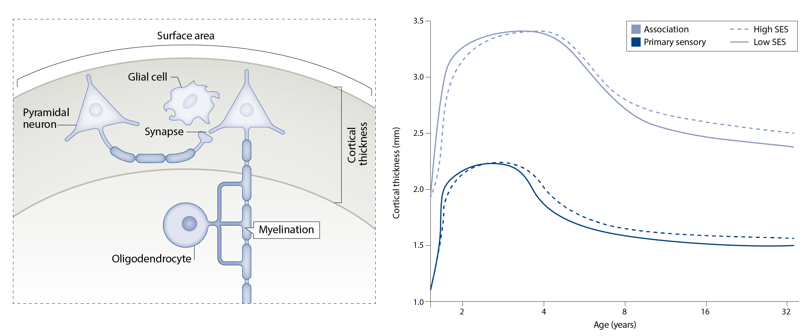

Publications
Selected publications
The age of reason: Functional brain network development during childhood. The Journal of Neuroscience (2022).
Human childhood is characterized by dramatic changes in the mind and brain, yet little is known about the remodeling of cortical connectivity during this developmental period. Here we found that, from age 4 to age 10, age is associated with pronounced development in both visual and medial prefrontal areas of the brain, at two ends of a gradient from perceptual, externally oriented cortex to abstract, internally oriented cortex. Children with more mature patterns of brain connectivity had better cognitive skills. This research challenges the traditional notion that sensory brain areas develop first and association brain areas last, and suggests that as brain connectivity becomes more specialized, children become more able to reason about the world and their place in it.
Little kids, big insights: What childhood can teach us about how the brain supports cognition Brains in Briefs, Sept 5, 2023, Kara McGaughey

Environmental influences on the pace of brain development. Nature Reviews Neuroscience (2021).
Childhood socioeconomic status (SES), a measure of the availability of material and social resources, is one of the strongest predictors of lifelong well-being. Here, we suggest that experiences associated with childhood SES affect not only the outcome but also pace of brain development, with implications for neural plasticity. We argue that higher childhood SES is associated with protracted structural brain development and a prolonged trajectory of functional network segregation, ultimately leading to more efficient cortical networks in adulthood. We hypothesize that greater exposure to chronic stress accelerates brain maturation, whereas greater access to novel positive experiences decelerates maturation. We also discuss the impact of variation in the pace of brain development on plasticity and learning.
Press
What Children Lose When Their Brains Develop Too Fast. Wall Street Journal, Dec 9, 2021, Alison Gopnik
 Associations between neighborhood SES and functional brain network development. Cerebral Cortex (2020).
It is intuitively obvious to anyone who has watched a child turn into a teenager that our brains undergo vast changes as we grow up. But how might these changes differ for a child living in Brooklyn as compared to a child living in Detroit? Our recent work finds that intrinsic brain networks become more segregated, or clustered into subgroups, as children get older, and that the socioeconomic status (SES) of the neighborhood they live in affects this process. We found that youth living in high-SES neighborhoods show stronger age-related changes in brain network segregation than youth living in low-SES neighborhoods.
Associations between neighborhood SES and functional brain network development. Cerebral Cortex (2020).
It is intuitively obvious to anyone who has watched a child turn into a teenager that our brains undergo vast changes as we grow up. But how might these changes differ for a child living in Brooklyn as compared to a child living in Detroit? Our recent work finds that intrinsic brain networks become more segregated, or clustered into subgroups, as children get older, and that the socioeconomic status (SES) of the neighborhood they live in affects this process. We found that youth living in high-SES neighborhoods show stronger age-related changes in brain network segregation than youth living in low-SES neighborhoods.
While children in high-SES neighborhoods start out with lower levels of brain network segregation, by age 22, they show higher levels of segregation than youth in low-SES neighborhoods, a pattern that is suggestive of faster brain development in the youth in high-SES neighborhoods. These effects were strongest in areas of the brain important for judgment, motivation, and both sensory and motor processing. Our findings shed light on the relationships between intrinsic brain networks and age, and on how the local environment might shape these relationships, underscoring the importance of the neighborhood during development.
All publications
Boroshok, A. L., McDermott, C.L., Fotiadis, P., Park A.T., Tooley, U.A., Gatavins, M.M., Tisdall M.D., Bassett, D.S., & Mackey, A.P. (2023). Individual differences in T1w/T2w ratio development during childhood. Developmental Cognitive Neuroscience.pdf
McDermott, C.L., Lee, J., Park, A.T., Tooley, U.A., Boroshok, A. L., Hilton, K., Linn, K.A., Mupparapu, M., Mackey, A.P. (2023). Developmental correlates of accelerated molar eruption in early childhood. Biological Psychiatry: Global Open Science. pdf
Tooley, U.A., Park, A. T., Leonard, J. A., Boroshok, A. L., McDermott, C.L., Tisdall, M.D., & Mackey, A.P. (2022). The age of reason: Functional brain network development during childhood. The Journal of Neuroscience. 42(44):8237–8251. pdf
Park, A. T., Richardson, H., Tooley, U.A., McDermott, C.L., Boroshok, A. L., Ke, A., Leonard, J. A., Tisdall, M.D., Deater-Deckard, K., Edgar, J.C., & Mackey, A.P. (2022). Early stressful experiences are associated with reduced neural responses to naturalistic emotional and social content in children. Developmental Cognitive Neuroscience. 57:101152. pdf
Richie-Halford, A., Cieslak, M., Ai, L. ... The Fibr Community Science Consortium including Tooley, U.A. ... Satterthwaite, T. D., & Rokem, A. (2022). An analysis-ready and quality controlled resource for pediatric brain white-matter research. Scientific Data. 9, 616. pdf
Boroshok A.L., Park A.T., Fotiadis, P., Velasquez G.H., Tooley, U.A. , Simon K.R., Forde J.C.P., Tisdall M.D., Cooper E.A., & Mackey A.P. (2022). Individual differences in frontoparietal plasticity in humans. npj Science of Learning. 7, 14. pdf
Tooley, U.A. Bassett, D.S. & Mackey, A.P. (2022). Functional brain network community structure in childhood: Unfinished territories and fuzzy boundaries. Neuroimage. 118843. pdf
Mahadevan, A.S., Tooley, U.A. , Bertolero, M.A., Mackey A.P., & Bassett, D.S. (2021). Evaluating the sensitivity of functional connectivity measures to motion artifact in resting-state fMRI data. Neuroimage. 118408. pdf
McDermott, C.L., Hilton, K., Park, A.T., Tooley, U.A. , Boroshok, A.L., Mupparapu, M., Scott, A.M., Bumann, E.E., Mackey, A.P. (2021). Early life stress is associated with earlier emergence of permanent molars. Proceedings of the National Academy of Sciences. 118(24) e2105304118. pdf
Cieslak, M., Cook, P.A., He, X., Yeh, F.H., Dhollander, T., Adebimpe, A., ... Tooley, U.A. , . & Satterthwaite, T.D. (2021). QSIPrep: A robust and unified workflow for preprocessing and reconstructing diffusion MRI. Nature Methods. 18, 775-778. link
Tooley, U.A., Bassett, D.S., & Mackey, A.P. (2021). Environmental influences on the pace of brain development. Nature Reviews Neuroscience, 22, 372–384. pdf
Park, A. T., Tooley, U.A. , Leonard, J. A., Boroshok, A. L., McDermott, C.L., Tisdall, M.D., & Mackey, A.P. (2021). Early childhood stress is associated with blunted development of ventral tegmental area connectivity. Developmental Cognitive Neuroscience, 47:100909. pdf
Tooley, U.A., Mackey, A. P., Ciric, R., Ruparel, K., Moore, T. M., Gur, R. C., Gur, R. E.,
Satterthwaite, T. D., Bassett, D. S. (2020). Associations between neighborhood SES and functional brain network development. Cerebral Cortex, 30(1), 1-19. pdf
Tooley, U., Makhoul, Z., & Fisher, P.A. (2016). Nutritional status of foster children: implications for cognitive and behavioral development. Children and Youth Services Review, 70, 369-374. pdf
Edgin, J.O., Tooley, U., Demara, B., Nyhuis, C., Anand, P., & Spano, G. (2015). Sleep disturbance and expressive language development in preschool-age children. Child Development, 86(6), 1984-1998. pdf
Submitted or in prep
Tooley, U.A., Latham, A., Kenley, J.K., Alexopoulos, D., Smyser, T., Warner, B.B., Shimony, J.S., Neil, J.J., Luby, J.L., Barch, D.M., Rogers, C.E., & Smyser, C.D. Effects of the early environment on the pace of brain network development: Evidence from the first three years of life. Under revision.
Tooley, U.A., Kenley, J.K., Camacho, M.C., Latham, A., Alexopoulos, D., Smyser, T., Warner, B.B., Shimony, J.S., Neil, J.J., Luby, J.L., Barch, D.M., Rogers, C.E., & Smyser, C.D. The development of structure-function coupling in neonates. In prep.
Simpson-Kent, I.L.*, Gataviņš, M.M.*, Tooley, U.A., Boroshok A.L., McDermott, C.L., Park A.T., Delgado Reyes, L., Bathelt, J., & Mackey A.P. Multilayer network associations between the exposome and childhood brain development. Under review.
Leverett, S.D., Brady R.G., Tooley, U.A., Lean, R.E., Wilson, J., Ruscitti, M., Triplett, R.L., Alexopoulos, D., Gerstein, E.G., Smyser, T.A., Warner, B.B., Luby, J.L., Smyser, C.D., Rogers, C.E., & Barch, D.M. Mechanisms through which prenatal social disadvantage is associated with offspring cognitive and language abilities at 2 years. Under review.
PDFs are provided to ensure timely dissemination of academic work. They can be downloaded for noncommercial, information purposes only, and may not be reposted without permission from the respective copyright holders.